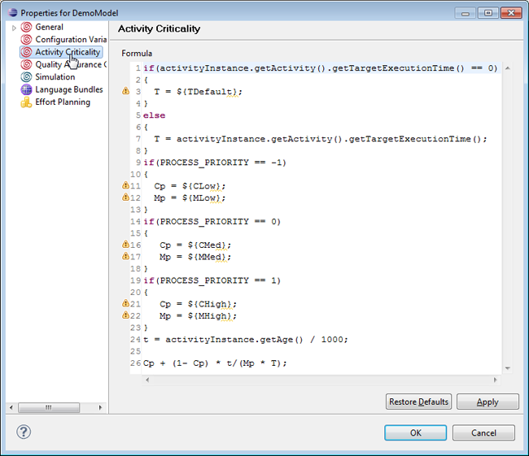
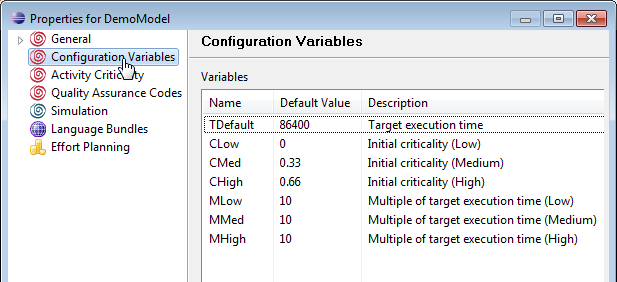
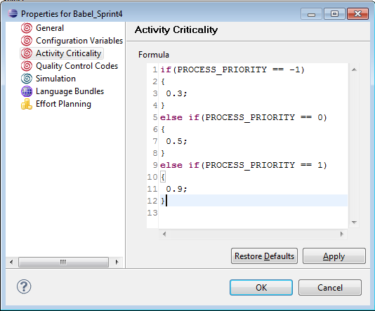

Defining Activity Criticality
To calculate criticality of any activity, you can define a JavaScript formula
in the Model property page.
During model creation, a standard criticality formula is created along with
default configuration variables used in this formula.
The formula determines the way how to calculate and recalculate activity
criticality.
For details and example usage of activity criticality,
refer to chapter
Activity Criticality in the
Concepts section.
Defining the Activity Criticality Formula
To define the activity criticality formula:
- In the Outline tree view of the modeler, right-click on the model and click
Properties. The model properties dialog box gets displayed.
- Select Activity Criticality option in the left pane of the properties dialog box.
- If not already created, the standard formula using the default
configuration variables for criticality is displayed.

Figure: Model Properties - Activity Criticality
For details on the standard JavaScript formula provided by Stardust, refer
to section
Standard
JavaScript Formula of chapter
Activity Criticality
in the Stardust Concepts
section.
- In the Configuration Variables pane, you can see the
default configuration variables used in the standard formula.

Figure: Default Configuration Variables used for standard
Formula.
For a detailed description of the default configuration variables, refer
to section
Default
configuration variables of chapter
Activity Criticality
in the Stardust Concepts
section.
- Now you edit the standard criticality formula or specify a custom
formula in the JavaScript editor named Formula.

Figure: Activity Criticality - Formula
Refer to section
JavaScript Formula of
chapter
Activity Criticality
in the Concepts section
for a detailed description on the parameters, variables and syntax that can
be used in the JavaScript code.
- In case you use the standard formula, you can also modify the default
values of the configuration variables.
- Click Apply and OK